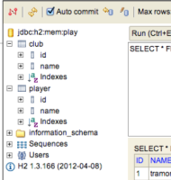
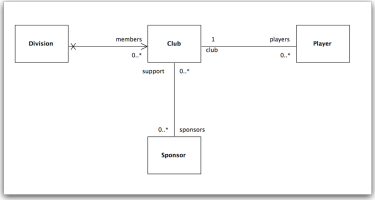
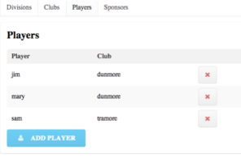
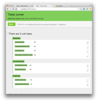
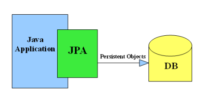

JPA: Model Relationships in Play
JPA I - OneToMany, ManyToOne
JPA II - ManyToMany
JPA UI
JPA-01
JPA-02
JPA Model
Gym V1 Specification
Gym V1 Solution
Gym V2 Specification
PlayGymWeb
JPA: Model Relationships in Play
Eamonn de Leastar, WIT
JPA I - OneToMany, ManyToOne

JPA II - ManyToMany

JPA UI

JPA-01

JPA-02

JPA Model